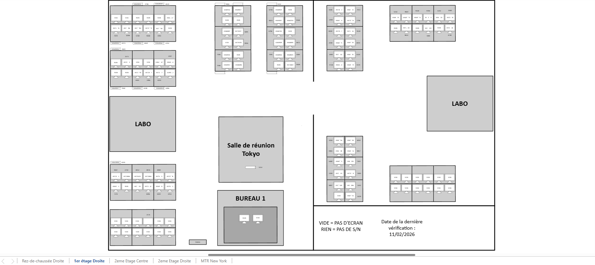
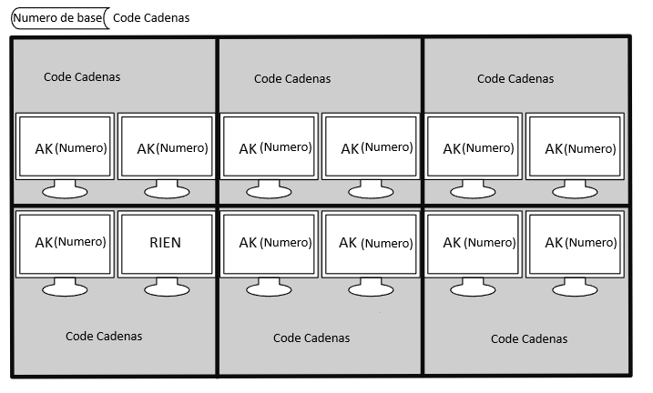
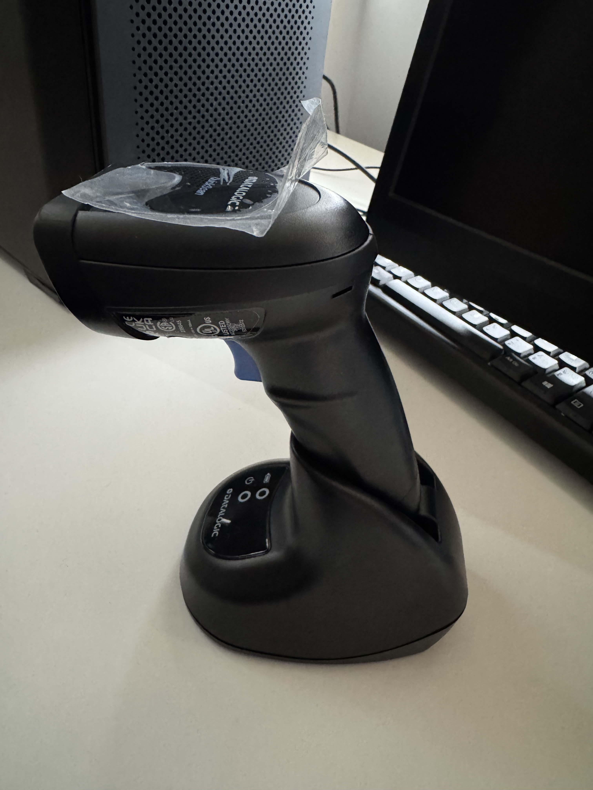
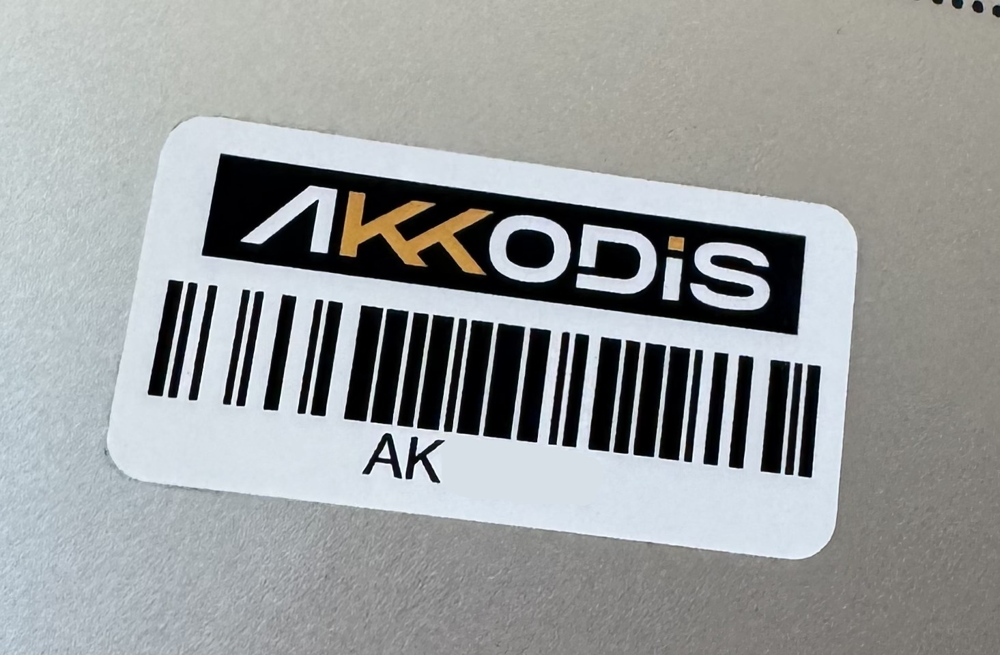
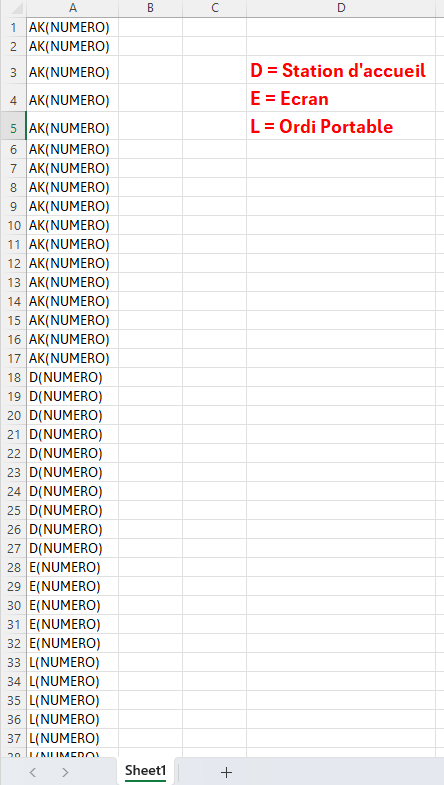
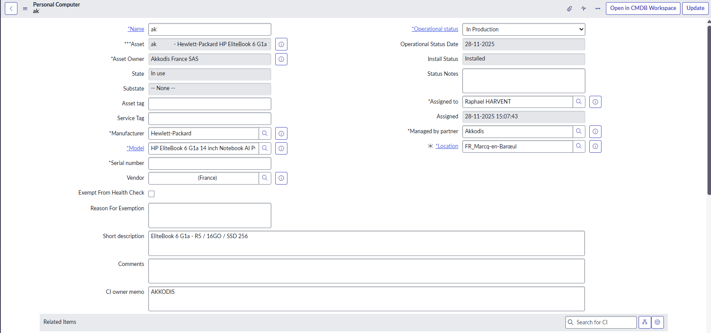

Contexte
Crée un schema qui permet de controler les PC rapidement et facilement pour empecher les vols de materiels.
Compétences mobilisées
Recensement et localisation physique de tous les équipements informatiques du site (PC, écrans, numéros AK, codes de cadenas). Création d'un schéma de cartographie par étage sous Microsoft Visio pour faciliter le contrôle du matériel et prévenir les vols.
Organisation méthodique de la démarche de cartographie : relevé terrain par étages, saisie des numéros AK dans le schéma Visio et mise à jour progressive de la documentation. Respect du planning de réalisation sur 3 semaines.
Objectifs
- Reperer tout les numéros AK sur les écrans et bases du site ansi que les codes de cadenas.
- Crée un schema des etages du batiment (emplacement de bureau et écrans).
- Renseigner tout les numero AK au bon endroit dans le batiment.
Réalisation
À compléter...
Crée une carte de l'entierté du site
À compléter...

Schéma globale — Microsoft Visio
Completer toute la carte
À compléter...

Schéma détaillé — Microsoft Visio
Résultats
À compléter...
Informations
Contexte
J'ai eu pour mission de réaliser un inventaire complet du parc informatique du site. Le parc n'étant pas suffisamment documenté, l'équipe technique avait besoin d'un référentiel fiable regroupant tous les équipements présents dans le stock. Pour répondre à ce besoin, j'ai mis en place une méthode de collecte terrain combinant le scan des codes-barres sur les étiquettes des postes et la vérification automatique via l'outil Snow, afin de croiser les données relevées manuellement avec les informations remontées par les agents déployés sur les machines.
Compétences mobilisées
Inventaire complet du parc informatique du site : recensement des équipements matériels (PC, serveurs, switches, imprimantes), identification des logiciels installés et suivi des licences associées. Mise à jour de la documentation du patrimoine.
Identification et signalement des anomalies détectées lors de l'inventaire : matériel manquant, références incorrectes ou équipements hors service. Remontée des écarts constatés à l'équipe technique pour prise en charge.
Planification et organisation de l'inventaire par zones du site. Suivi de l'avancement à l'aide d'un tableau de bord. Coordination avec l'équipe technique et respect du calendrier défini.
Vérification de l'état et de la configuration des postes lors du relevé d'inventaire. Identification des équipements nécessitant une mise à jour matérielle ou logicielle. Contrôle de la conformité du parc avec les standards du site.
Recensement des accès et des identifiants associés aux équipements inventoriés. Vérification de la conformité des configurations avec la politique de sécurité du site.
Objectifs
- Recenser tous les équipements matériels du site (PC, serveurs, switches, imprimantes…)
- Identifier les logiciels installés et leurs licences
- À compléter...
Réalisation
À compléter...
Utilisation de l'outil d'inventaire
Pour proceder a un inventaire, on va utiliser un outil qui permet de scanner les codes bar des pc afin de les inclures dans Excel

Outils retenus pour l'inventaire du parc
Exemple d'etiquette
Nous allons scanner les etiquette en dessous des pcs pour ansi les recensés sur un tableau excel

Relevé des postes sur le site
Structuration du tableau d'inventaire
Nous allons saisir et organisé les données collectées dans un tableau Excel structuré : marque, modèle, numéro de série associé et localisation. Le tableau sert de référentiel du parc pour le service informatique.

Extrait du tableau d'inventaire du parc informatique
Vérification via PC Snow
Utilisation de Snow pour croiser les données relevées manuellement avec les informations remontées automatiquement par l'agent déployé sur les postes. Cette étape permet de détecter les écarts, les logiciels non référencés et les postes non conformes.

Interface Snow – remontée automatique des données postes
Résultats
L'inventaire réalisé a permis de recenser l'ensemble des postes du stock en scannant les étiquettes situées sous chaque PC. Les données collectées ont été organisées dans un tableau Excel structuré regroupant la marque, le modèle, le numéro de série et la localisation de chaque équipement. Le croisement avec Snow a ensuite permis de détecter les écarts entre le relevé terrain et les informations remontées automatiquement, mettant en évidence les postes non conformes et les logiciels non référencés. Le service informatique dispose désormais d'un référentiel complet et à jour pour piloter et suivre le parc.